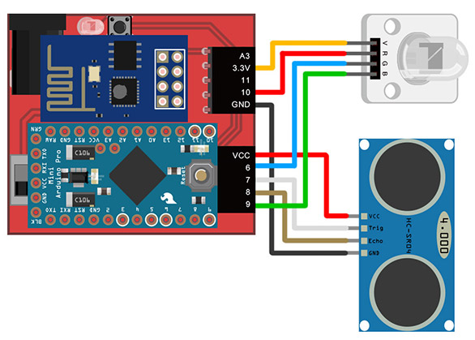
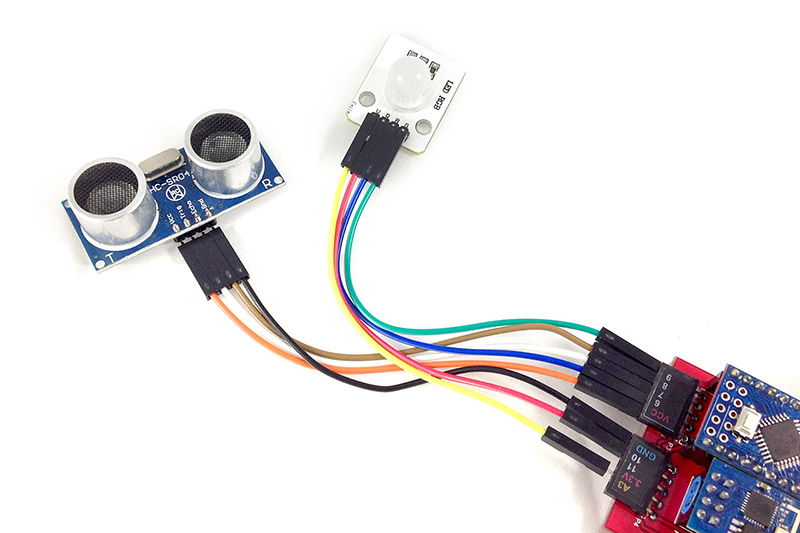
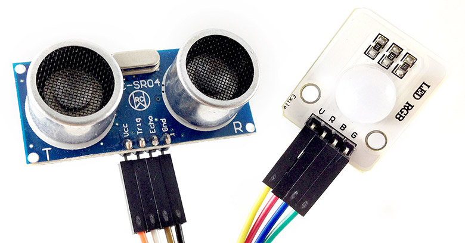
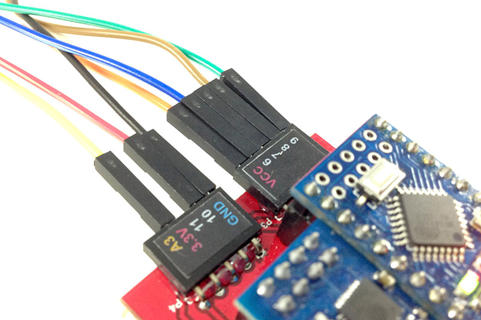
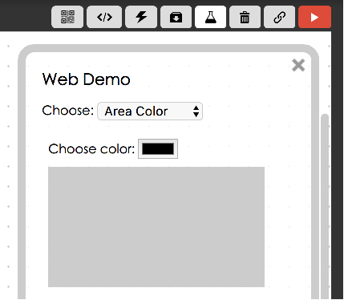
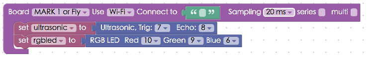
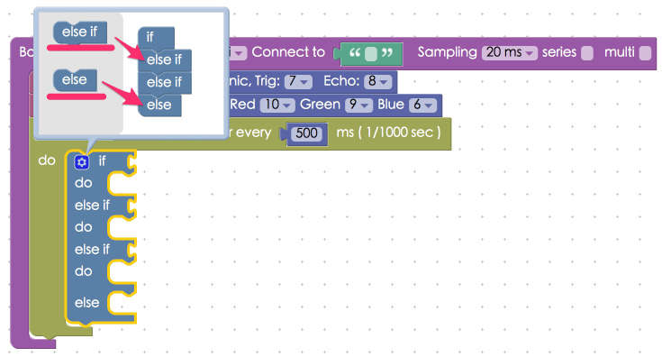
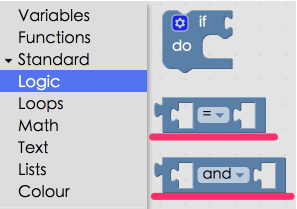
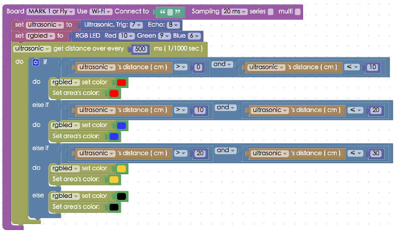

Project Example 8: Controlling RGB LEDs with an Ultrasonic Sensor
This project example should be a piece of cake after we learned how to control an LED with an Ultrasonic sensor in project example #7. This project uses an RGB LED to show different colors to represent the distance measured by the Ultrasonic sensor.
Video Tutorial
Check the video tutorial here:
Wiring and Practice
It seems as if we could plug the Ultrasonic sensor and RGB LED directly into the Webduino board, but the RGB LED needs to use the PWM pin, so it cannot connect to pin 7 or 8. Therefore, we will use a breadboard and jumper wires to connect our components. Connect the VCC pin on the Ultrasonic sensor to VCC, Trig to pin 7, Echo to pin8, and GND to GND. As for the RGB LED, connect the VCC to 3.3v, R(red) to pin 10, B(blue) to pin 6, and G(green) to pin 9.
Webduino Mark 1 Circuit diagram:

Webduino Fly Circuit diagram:

Reference image:



Instructions for using the Webduino Blockly
Open the Webduino Blockly editor. Click on "Web Demo Area" on the upper right hand corner and click "Area Color" from the drop-down menu. So later, when the Ultrasonic sensor measures different distances a color will show on screen and the RGB LED will also show the same color.

Place the "Board" block inside the editor and fill in the name of your Webduino board. Place an "UltraSonic" board in the stack and set the name to "ultrasonic", set the Trig pin to 7, and Echo to 8. Then place an "RGB LED" block in the stack and set the name to rgbled, red to 10, green to 9 and blue to 6.

Place a "get distance over every / do" block in the stack and set to take measurements every 500 milliseconds, and place an "if/do" block from the "Logic" menu inside that. Since we will have many conditional statements when different distances are measured, place a couple of "else if" and "else" blocks inside that stack.

We will use another 2 "logic" blocks, the "and" block, which will only run when both conditions are met.

This way we can make four different combinations of ranges; "0 to 10", "10 to 20", "20 to 30", and "greater than 30".

After you are done setting up the stack, check if the board is online (click "Check Device Status"), then click on the red execute button "Run Blocks", wave your hand in front of the Ultrasonic sensor and you'll see the the Web Demo area and the RGB LED show different colors that correspond with the different distances of your hand! (Solution: https://blockly.webduino.io/?lang=en#-KZuAa5uJJaJa6y_0rrD)
Code Explanation (Check Webduino Bin, Check Device Status )
Include webduino-all.min.js in the header of your html files in order to support all of the Webduino's components. If the codes are generated by Webduino Blockly, you also have to include webduino-blockly.js in your files.
<script src="https://webduino.io/components/webduino-js/dist/webduino-all.min.js"></script>
<script src="https://webduinoio.github.io/webduino-blockly/webduino-blockly.js"></script>
The div inside of the HTML file displays the color on screen.
<div id="demo-area-04-area"></div>
The CSS code controls the size and default color of the div.
#demo-area-04-area {
width: 90%;
height: 150px;
background: #ccc;
}
Our JavaScript code uses a lot of if, elseif, and else, with "and" represented as &&. Using these conditional statements we show different colors at different distances.
var ultrasonic;
var rgbled;
boardReady('', function (board) {
board.samplingInterval = 20;
ultrasonic = getUltrasonic(board, 7, 8);
rgbled = getRGBLed(board, 10, 9, 6);
ultrasonic.ping(function(cm){
console.log(ultrasonic.distance);
if (ultrasonic.distance > 0 && ultrasonic.distance <= 10) {
rgbled.setColor('#ff0000');
document.getElementById("demo-area-04-area").style.background = '#ff0000';
} else if (ultrasonic.distance > 10 && ultrasonic.distance <= 20) {
rgbled.setColor('#3333ff');
document.getElementById("demo-area-04-area").style.background = '#3333ff';
} else if (ultrasonic.distance > 20 && ultrasonic.distance <= 30) {
rgbled.setColor('#ffcc33');
document.getElementById("demo-area-04-area").style.background = '#ffcc33';
} else {
rgbled.setColor('#000000');
document.getElementById("demo-area-04-area").style.background = '#000000';
}
}, 500);
});
Now you've learned how to use an Ultrasonic sensor to measure the distance and to display a color on your screen and with an RGB LED.
Webduino Bin: http://bin.webduino.io/noje/edit?html,css,js,output
Stack setup: https://blockly.webduino.io/?lang=en#-KZuAa5uJJaJa6y_0rrD
More information :
2. Blockly : https://goo.gl/Y8sRkl
3. Products : https://webduino.io/buy.html
4. Store : http://goo.gl/0Dj9ip